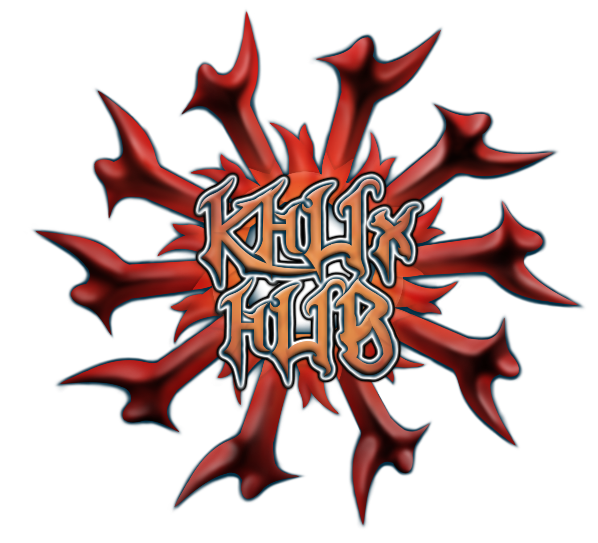

Credits and Inspirations
Roboloid
Hey everyone! I'm the one who put together this humble site of mine. I made this site with the intent of spreading certain information easier (a cost calculator is much friendlier to use than a large spreadsheet).
I have plans to expand the site further beyond the keyblade cost calculator, so please look forward to it! I hope you find the site enjoyable to use!
Twitter: @Roboloid / Reddit: u/Roboloidx / Discord: Roboloid#2128
Ultimadei
Ultimadei played a major role in making it possible to gather the data you see on this site. He contributed not only his brains, but also his dedication and commitment to making this happen.
None of this would be possible without my friend Ultimadei! His never-ending curiosity lead to big discoveries in extracting data, and he deserves nothing short of great praise for his work.
Twitter: @HubKhux / Reddit: u/Ultimadei / Discord: KHUx-Hub Ultimadei#5637
Wiki
The KHUx & KH Wikis are vast and thorough resources. I've had the pleasure of meeting some of the various dedicated staff at the wiki, and their continued dedication for all KH games is always phenomenal.
The KHUx Wiki did a great job of keeping track of all the medal album numbers over the years, and it was very helpful to use their data to fact check my own album numbers! Thank you all for your continued service!
KHUx: KHUx Wiki / KH: KH Wiki / Twitter: @KHWiki
Jun Li
Jun Li is a Dragalia Lost player who made a strikingly thorough info site. This site is packed with data and visuals with a clean and responsive UI.
As a Dragalia Lost player myself, I used Jun's site several times to look up upgrade costs and calculate if I had the stats necessary to survive a certain fight. While he didn't participate in this project of mine, his site was inspirational and motivated me to make something similar for KHUχ!
Website: dragalialost.info / GitHub: github.com/junlico/dragalia-lost / Reddit: u/Junlico